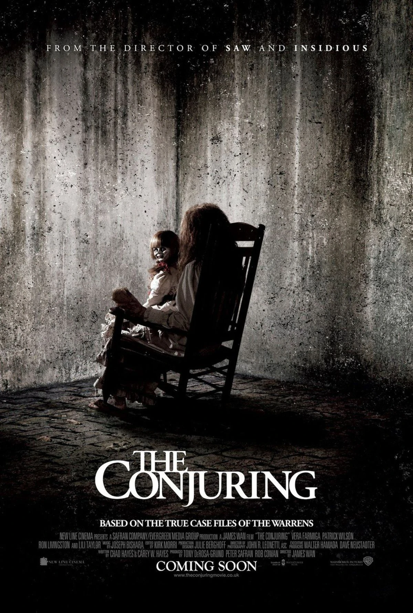

In 1971, Roger and Carolyn Perron move into a farmhouse in Harrisville, Rhode Island, with their five daughters: Andrea, Nancy, Christine, Cindy, and April. Their dog, Sadie, refuses to enter the house. They discover the entrance to a cellar which has been boarded up.
Paranormal events occur within the first few nights. Every clock in the house stops at 3:07 AM, birds fly into their windows, Sadie is found dead in the morning, and Carolyn wakes up with large bruises. One night, Christine encounters a malevolent spirit. Another night, Carolyn hears clapping in the hallway and becomes trapped in the basement. Andrea and Cindy are attacked in their bedroom by a spirit believed to be the one that Christine had encountered.
Carolyn contacts demonologists Ed and Lorraine Warren, who have recently investigated a possessed doll called Annabelle. The Warrens agree to take the case and conduct an initial investigation, during which Lorraine, a clairvoyant, sees that dark forces have latched on to the Perron family, and leaving the house will not free them. To gather evidence, they place cameras, recorders, and bells around the house with the help of their assistant Drew Thomas and police officer Brad Hamilton. Further research reveals that the house once belonged to an accused witch named Bathsheba Sherman (a relative of Mary Towne Eastey), who sacrificed her week-old baby to the devil and killed herself in 1863 at 3:07 in the morning after cursing all who take her land. They find reports of numerous murders and suicides through the years in the houses that were built on the property.